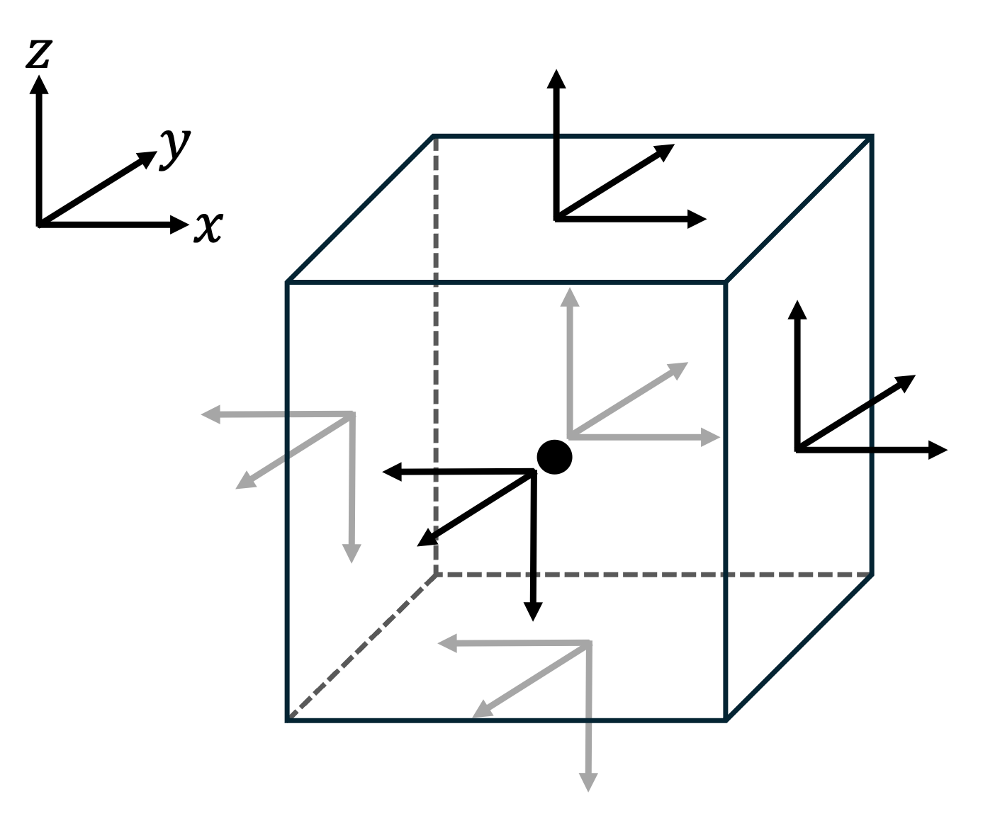
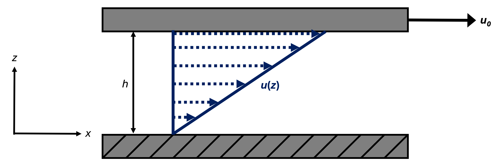

Section 3.3 Viscous friction force
Forces acting on the surface of an air parcel can cause the air parcel to deform (change in shape and possibly size) through tension, compression, and/or shear. We express such deforming forces acting on a unit area of the parcel as stress \(\tau\) [Pa], which is measured using the same units as pressure.
Forces can act on any of the six faces of the air parcel from Figure 3.0.1, and they can act in three orthogonal directions on each face, thereby creating stress. In Figure 3.3.1 below, the three vectors attached to each face of the air parcel represent the three orthogonal directions, parallel to the coordinate axes, in which a force can act on a given face.

While stress is the result of external forces, it translates internally through the air parcel via viscosity. Viscosity expresses how much a fluid like air resists deformation due to interactions such as collisions between its own particles. Its value depends on the fluid’s molecular makeup as well as its thermodynamic state, and it often is measured using the dynamic viscosity \(\mu\) [Pa s], where larger values of \(\mu\) reflect higher viscosity.
When faster-moving particles of a fluid collide with slower-moving particles, they transfer some of their momentum to the slower-moving particles. This causes the faster-moving particles to slow down while the slower-moving particles speed up. Thus, through momentum transfer between adjacent particles, viscosity minimizes velocity differences within a fluid.
If the air parcel of Figure 3.0.1 is at rest relative to its environment, it only experiences deformation due to the forces of discrete particles randomly colliding with its bounding surface, which collectively are expressed per unit area as pressure and are compressive, as discussed previously in Section 3.2. But if there is relative motion between the air parcel and its environment due to fluid flow, the air parcel can experience additional (normal and tangential) stresses due to fluid velocity gradients (i.e., wind shear) that translate through it via viscosity. We deem the sum total of these additional deforming forces the viscous friction force or sometimes simply the viscous force, the friction force, or the frictional force.
The components of the viscous friction force per unit mass are given by
\begin{gather}
\frac{F_{rx}}{m}
=
a_{r,x}
=
\nu \left[
\frac{\partial^2 u}{\partial x^2}
+
\frac{\partial^2 u}{\partial y^2}
+
\frac{\partial^2 u}{\partial z^2}
\right]\tag{3.3.1}\\
\frac{F_{ry}}{m}
=
a_{r,y}
=
\nu \left[
\frac{\partial^2 v}{\partial x^2}
+
\frac{\partial^2 v}{\partial y^2}
+
\frac{\partial^2 v}{\partial z^2}
\right]\tag{3.3.2}\\
\frac{F_{rz}}{m}
=
a_{r,z}
=
\nu \left[
\frac{\partial^2 w}{\partial x^2}
+
\frac{\partial^2 w}{\partial y^2}
+
\frac{\partial^2 w}{\partial z^2}
\right]\tag{3.3.3}
\end{gather}
We combine the three component accelerations of (3.3.1)–(3.3.3) into the viscous friction force per unit mass, or the viscous friction acceleration:
\begin{equation}
\frac{\vec{F}_r}{m}
=
\vec{a}_r
=
\nu \nabla^2 \vec{u} \tag{3.3.4}
\end{equation}
where \(\vec{F}_r\) is the viscous friction force and \(\vec{a}_r\) is the viscous friction acceleration.
The complete derivation of (3.3.1)–(3.3.3) and (3.3.4) is beyond the scope of this course: See [Kundu et al. (2016)] for a detailed derivation. [Martin (2006)] presents a simplified derivation of (3.3.1)–(3.3.3) in his Subsection 2.1.3; since the viscous friction force can be neglected in most meteorological applications, as discussed below, I refer you to his derivation rather than reproduce it here.
The dependence of the viscous friction force on \(\vec{u}\) as shown in (3.3.4) means that the viscous friction force is present only in a moving fluid. Furthermore, the second-order derivatives encompassed by the Laplacian of velocity and shown explicitly in (3.3.1)–(3.3.3) mean that the viscous friction force is present only in moving fluids with nonlinear velocity profiles.
For altitudes relevant to the large majority of meteorological applications, the dynamic viscosity of air is largest next to Earth’s surface where the air is densest, pressure is highest, and temperature in the troposphere generally is warmest: According to the [U.S. Standard Atmosphere (1976)], under average conditions, \(\mu = 1.8 \times 10^{-5}\) Pa s next to Earth’s surface and decreases linearly through the troposphere. Consequently, the viscous friction force is negligibly small in atmospheric motions occurring more than a few millimeters above the surface. But the extreme wind shear that occurs in this layer due to viscosity leads to turbulence, which translates the effects of the viscous friction force upward through a much greater depth: up to a few kilometers during the daytime! Turbulence is not of focus in this course, but it is an interesting and meteorologically significant (not to mention aeronautically significant!) topic that you will return to in future courses.
Subsection 3.3.1 Couette flow
Couette flow, which is the flow of a viscous fluid bounded between two surfaces moving tangentially relative to each other, often is used to visualize shear stress (also called tangential stress). The set-up of steady planar Couette flow is shown in Figure 3.3.2 below.

The upper surface drags the fluid particles directly below it: You could think of these particles as constituting an infinitesimally thin layer of fluid directly below the upper surface. This causes the layer of fluid in contact with the plate to move to the right at \(u_0\) with the plate. The upper layer of fluid drags the layer of fluid directly below it due to viscosity, and that layer of fluid drags the layer of fluid directly below it due to viscosity, and so on. Likewise, the lower surface drags the fluid particles directly above it, causing that layer of fluid to also be motionless. The lower layer of fluid drags the layer of fluid directly above it due to viscosity, and that layer of fluid drags the layer of fluid directly above it due to viscosity, and so on. After a time, steady state (i.e., \(\dfrac{\partial u}{\partial t} = 0\)) is achieved through this downward momentum transfer by the fluid particles. The resulting vertical profile of the horizontal velocity is
\begin{equation}
u(z) = u_0 \frac{z}{h}\tag{3.3.5}
\end{equation}
The shear stress for a Newtonian fluid—which air can be approximated as—has been determined empirically to be linearly related to velocity gradients within the fluid, as expressed by Newton’s law of viscosity. For planar Couette flow, this produces
\begin{equation}
\tau_{xz} = \mu \frac{\partial u}{\partial z}\tag{3.3.6}
\end{equation}
where the first subscript \(x\) indicates the direction of the normal vector of the cross-sectional area upon which stress is acting (also the flow velocity component under consideration) and the second subscript \(z\) indicates the direction in which the stress acts (also the direction in which the flow is sheared). \(\tau_{xz}\) represents the external force per unit area that must be applied to the plate to keep it moving at a constant rate despite the viscous fluid dragging it back.
Note that \(\tau_{xz}\) in this simple case of steady planar Couette flow is constant since
\begin{equation*}
\frac{\partial u}{\partial z} = \frac{u_0}{h}\text{.}
\end{equation*}
Thus, it follows that no viscous friction force is experienced by the fluid: Since \(u\) is a linear function of \(z\text{,}\)
\begin{equation*}
\frac{\partial^2 u}{\partial z^2} = 0\text{.}
\end{equation*}
But if \(u(z)\) was nonlinear, such as is the case soon after the upper surface begins moving forward and before steady state is achieved,
\begin{equation*}
\frac{\partial^2 u}{\partial z^2} \neq 0
\end{equation*}
and the fluid would experience a non-zero viscous friction force that progressively nudges it toward steady planar Couette flow.